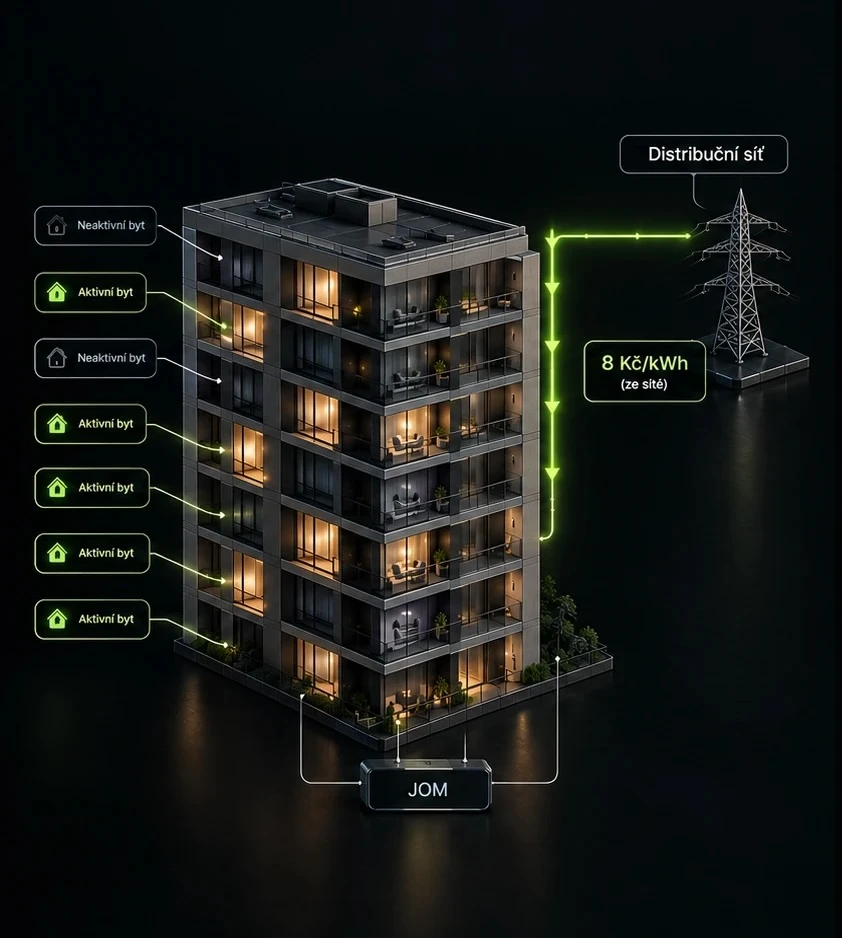
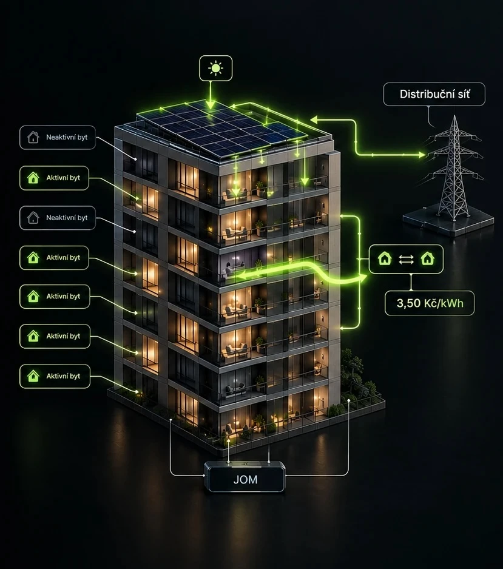

Kolik dům ušetří podle typu elektroměru, jak funguje sdílení přebytků a srovnání s prodejem do sítě.
Bytový dům, 24 bytů, FVE 20 kWp + JOM. Každý byt obdrží alokovaný podíl na výrobě odpovídající spoluvlastnickému podílu — průměrně přibližně 833 kWh ročně. Odjede-li majitel bytu na tři měsíce, jeho nevyužitou alokaci (~210 kWh) automaticky odeberou sousedé za interní cenu ze sdílení. Ve ročním vyúčtování původní vlastník podílu obdrží přibližně 735 Kč — aniž cokoliv aktivně řešil. Sousedé na každé takto odebrané kWh ušetří přibližně 4,50 Kč oproti nákupu ze sítě. Stejný princip platí pro důchodce s nízkou spotřebou nebo byt obývaný jen o víkendech.


| Bez JOM | S JOM | |
|---|---|---|
| Byt, který energii nevyužijedovolená, důchodce s nízkou spotřebou | Nevyužitý podíl na výrobě propadá, případně se prodává do sítě za nejistou (spotovou) cenu | Nevyužitý podíl automaticky odeberou sousedé za interní cenu — majitel dostane peníze v ročním vyúčtování, nehledě na to kdo sdílenou energii odebral |
| Soused, který má vyšší spotřebuhomeoffice, … | Chybějící energii nakupuje ze sítě za plnou cenu — včetně distribuční části | Stejnou energii odebere za interní cenu — ekvivalent bez distribuční části |
Sdílení funguje jako oboustranný obchod uvnitř domu: kdo energii nevyužije, automaticky ji prodá sousedům a dostane za ni peníze, aniž by cokoliv řešil. Kdo ji odebere, zaplatí jen za elektřinu samotnou — bez distribuční přirážky, kterou by platil při nákupu ze sítě.
| Bez JOM | S JOM | |
|---|---|---|
| Cena za přebytek | kolísá podle aktuální nabídky a poptávky na trhu | pevná interní cena, daná dopředu |
| Situace v letní špičce | přebytek solární výroby v celé síti tlačí cenu k nule, v krajním případě až do záporných hodnot | poptávka sousedů v domě zůstává stejná bez ohledu na to, co se děje na trhu |
| Co majitel reálně dostane | v nejhorších dnech nic, nebo dokonce doplácí za odvod přebytku | dostává zaplaceno za každou sdílenou kWh — bez výjimky |
| Jistota výnosu | žádná — cena je mimo jeho kontrolu | garantovaná — cena je smluvně daná |
Právě v okamžiku, kdy má majitel nejvíc přebytků — v létě, uprostřed dne — je prodej do sítě nejméně výhodný, protože se v tu chvíli přebytků snaží zbavit celá síť najednou. V bytovém domě je to přesně naopak: čím víc slunce, tím víc si sousedé mezi sebou vymění, a majitel vydělává i ve chvíli, kdy by na spotu mohl doplácet.
| Bez JOM | S JOM | |
|---|---|---|
| Sazba, kterou má většina bytů v domě | standardní — jednotarifová | stejná — JOM na sazbě nic nemění |
| Podíl distribuce na ceně této sazby | ~40 % z každé odebrané kWh | — |
| Co za distribuci zaplatíte na sdílené kWh | plnou distribuční přirážku, na 100 % spotřeby | 0 Kč — energie neopustí dům, distribuce se neúčtuje |
| Dopad na většinu bytů v domě | platí distribuci na každé kWh bez výjimky | ušetří přesně tuto distribuční část — protože jde právě o sazbu, kterou má většina z nich |
Distribuce není okrajová položka, ale téměř polovina ceny za elektřinu u sazby, kterou má drtivá většina domácností v domě. Sdílení v JOM ji u sdílené energie kompletně obchází — a protože se týká většiny bytů, jde o nejširší a nejjistější zdroj úspory z celého principu.
| Bez JOM | S JOM | |
|---|---|---|
| Byt s ústředním topenímjednofázový elektroměr | platí distribuci a poplatky v plné výši na každou kWh, i když jde o nižší spotřebu | ušetří hlavně na distribuční části ceny sdílené energie |
| Byt s vlastní elektrokotlemtřífázový elektroměr | vyšší spotřeba i vyšší regulované poplatky — třífázové připojení samo o sobě nese vyšší fixní náklady | ušetří na distribuci stejně jako ostatní, navíc díky vyššímu objemu odběru vychází úspora v korunách výrazněji |
Typ elektroměru neurčuje, jestli se sdílení vyplatí — vyplatí se oběma. Určuje ale, jak velká ta úspora reálně bude: byt s vlastním elektrickým zdrojem tepla má vyšší spotřebu, a tím i větší absolutní prostor pro úsporu, i když procentuálně jde o stejný princip jako u běžného bytu.
Ekonomická výhodnost JOM pro bytový dům
Klíčové statistiky, srovnání FVE+JOM vs. FVE bez JOM a kdy je kombinace nejsilnější.
EDC nebo JOM — srovnání obou variant sdílení elektřiny
Podrobné srovnání obou variant sdílení elektřiny — technické, ekonomické i administrativní rozdíly.
Přechod na JOM — realizace a technické podmínky
Fáze realizace krok za krokem, technické požadavky, dopad na náklady a doporučené pořadí opatření.
Průvodce JOM — přehled všech témat
Zpět na přehled témat JOM pro bytové domy.